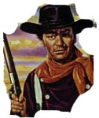

DVD Review Archive
Feature Archive Links DVD MIA DVD
Alerts Movie Posters Laser Site Info Home E-mail
© 2002 Films on Disc Stuart J. Kobak ALL RIGHTS RESERVED.
|
|
A sweeping western that fills the widescreen with glorious landscapes, big sound and big performances, Bite the Bullet injects more wind in its cross country 2000-mile endurance horse race than the average western conjures up on a dust filled main street showdown. There were snippets of good work and the cinematography took advantage of the fabulous terrain, but it failed to live up to its scope. I love watching Gene Hackman and he was terrific as former Rough Rider Clayton, the Good Samaritan of the contestants In the end, it really seemed to go on for 2000 miles.
There's no question about the grueling nature of the
race, but at times the repetition seems almost as grueling. Some script
elements appear contrived serving simply to add meat to the bones of the
race. What seems rather odd is that there's never any qualification
or entering the race and it's not clear how much the entry fee, if any,
costs. Some of the participants seem outright out of place. Though an old
tough guy like Ben Johnson would normally fit right in, his character
simply does not work. |

The Movie Poster Archive includes extensive poster images from the films of stars like Susan Hayward, Kirk Douglas, Katharine Hepburn and many more. Our featured star is Richard Widmark. |